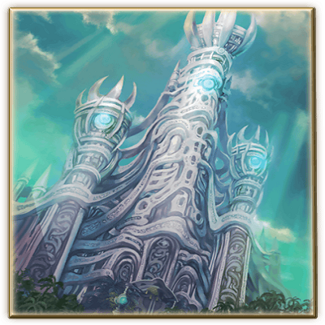
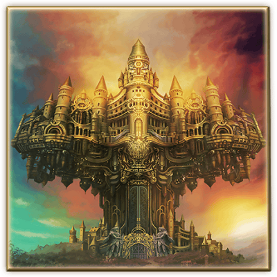
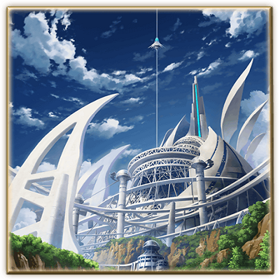

BC 2만년. 파르지팔 왕조가 통치하는 시대. 사대정령이 자연을 지배하고, 사람들은 정령에게 은혜을 받으며 살고 있다.

AD 300년. 주인공 알도 일행이 사는 시대. 건국이래 300년을 맞이한 미글랜스 왕조가 통치하고 있다. 프리즈마라 불리는 결정체를 사용해 사람들이 풍족하게 살고 있다.

AD 1100년. 오염된 대지에서 벗어나, 사람들이 하늘로 이동해 사는 시대. 새벽빛의 도시 엘지온을 중심으로 한 부유도시에서 일상생활을 하고 있다